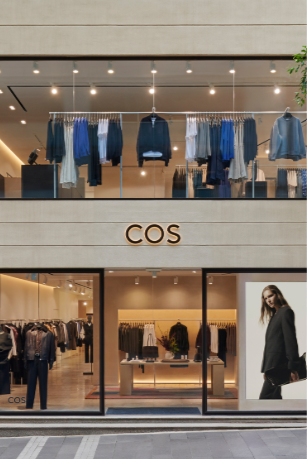
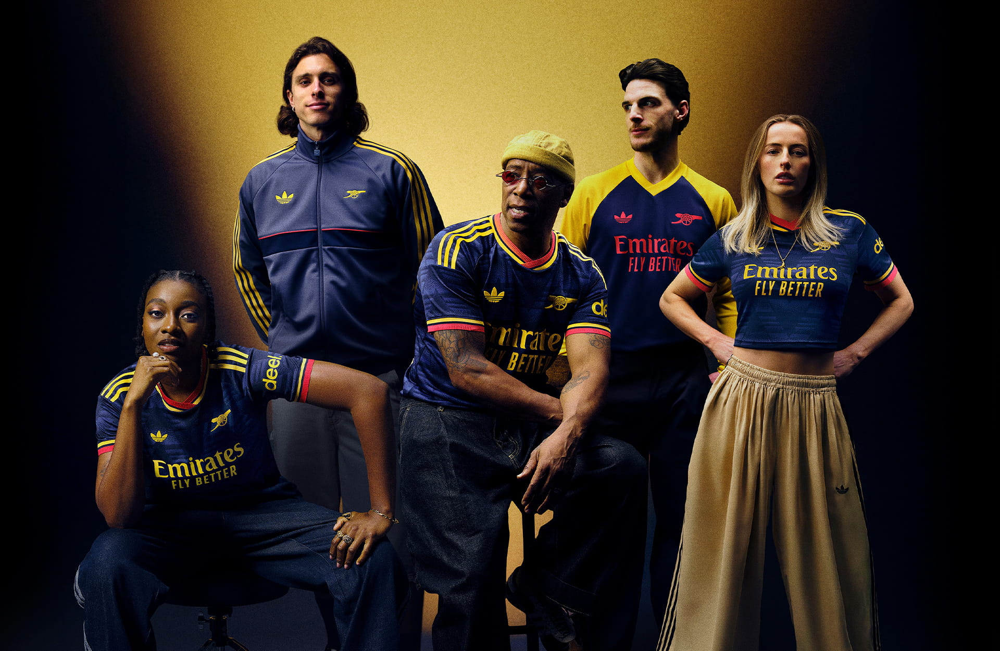

Notes & Perspectives
Ideas on branding, strategy, leadership, culture, and creativity.

What Happened To The Middle Ground In Fashion?
I enjoy clothes and have no issue paying for quality. What I increasingly have an issue with is paying luxury-inspired prices for products that are nowhere near luxury quality.
Read article ↗
A Company Is Bigger Than One Person
When a prominent CEO or founder leaves a company, financial markets sometimes react as though the entire business has suddenly lost its value.
Read article ↗Porsche: More Than A Car, It's A Culture
Few automotive brands inspire the same level of devotion as Porsche. The cars are beautifully designed, brilliantly engineered, and exhilarating to drive. But what…
Read article ↗
AP X Swatch: A Missed Opportunity
Stormzy once said, ‘I’m still disappointed.’ Honestly, that’s exactly how I feel after the AP x Swatch reveal.
Read article ↗
$4,800 To Watch From The Rafters
NBA Finals tickets at MSG tonight. Nosebleeds: $4,800. Lower level: $8,000-$25,000. Courtside: $100,000+.
Read article ↗
What Dua Lipa Can Teach Us About Brand Building
We often hear that authenticity sells.
Read article ↗The Best Brands Evolve Without Losing Their Identity
Heritage can be one of a brand's greatest strengths. It can also become one of its greatest challenges.
Read article ↗
Crossing The Firing Line: What We Can Learn From Our Rivals
Sometimes the best lessons come from the places we least want to look. As a Tottenham supporter, praising Arsenal does not come naturally. However, there is something to…
Read article ↗
Beyond The Runway: How Louis Vuitton Is Entering New Cultural Worlds
Luxury has traditionally been associated with exclusivity, heritage, and craftsmanship. However, maintaining that identity doesn't mean staying within the same cultural…
Read article ↗
What Public Enemy Taught Me About Creativity
Listening to Public Enemy can be exhausting. Their music is loud, relentless, chaotic, and at times almost overwhelming. Yet the more I listen, the more I appreciate…
Read article ↗
The Power Of James Bond
James Bond might be fictional, but his commercial influence is very real. For more than 60 years, the British secret agent has been associated with some of the world's…
Read article ↗